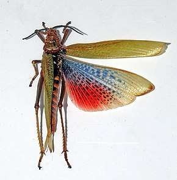
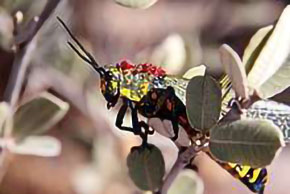

Phymateus Saxosus


Le Phymateus Saxosus est un insecte orthoptère de la famille des Pyrgomorphidae présent à Madagascar.
Cette espèce se mesure environ dans les 70mm de long, ils sont capables de faire de long vols migratoire sauf les femelles malgré que leurs ailes soient très développées.
Ces criquets se caractérisent aussi par les bruits des ailes qu’il font lorsqu’on les dérange.
Cette espèce se différencie de la plupart des criquets par le fait qu’il mange des plantes très toxic d’où la sécrétion de fluide nocif depuis l’articulation thoracique…